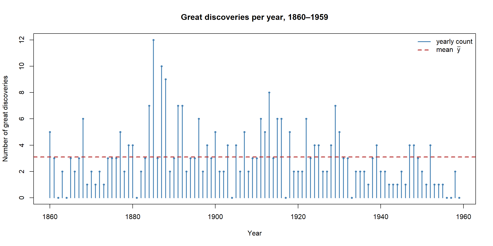
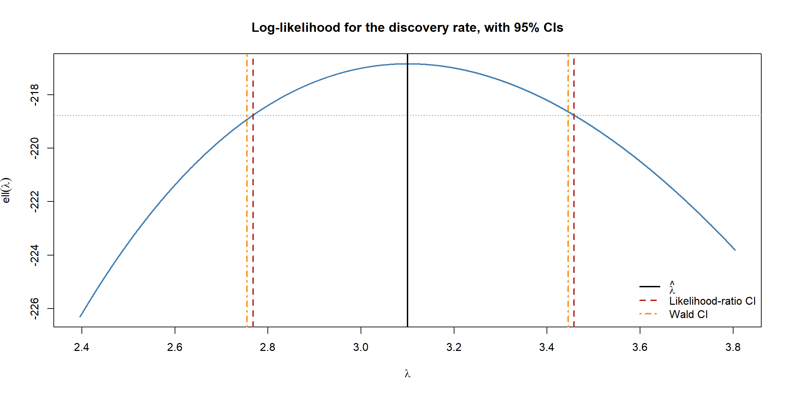
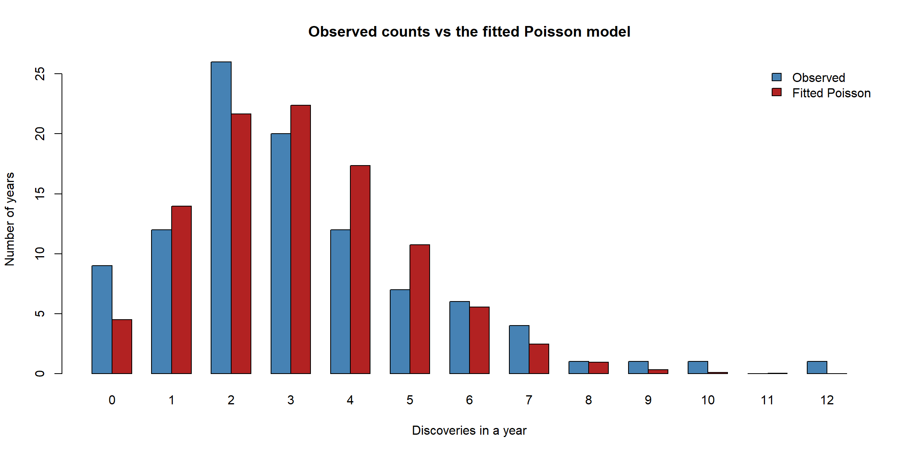
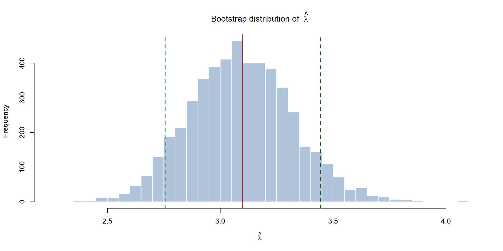
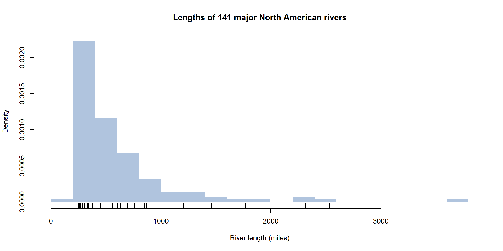
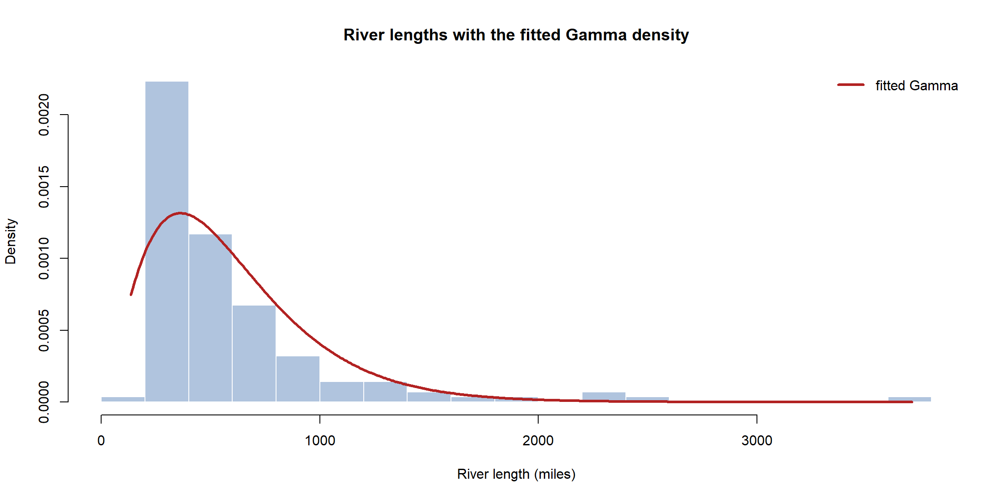
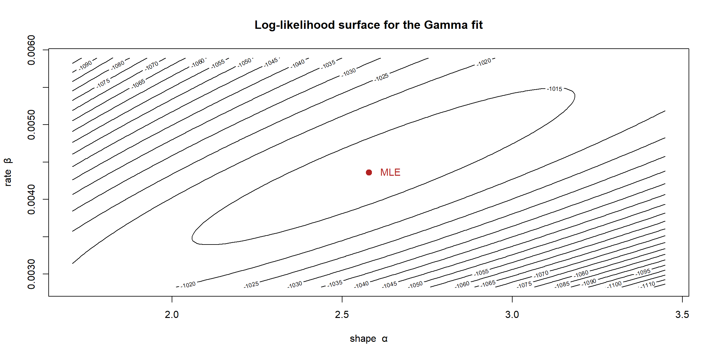
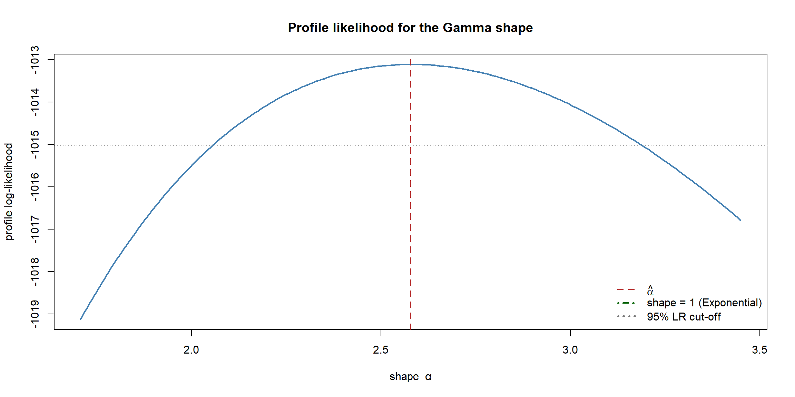
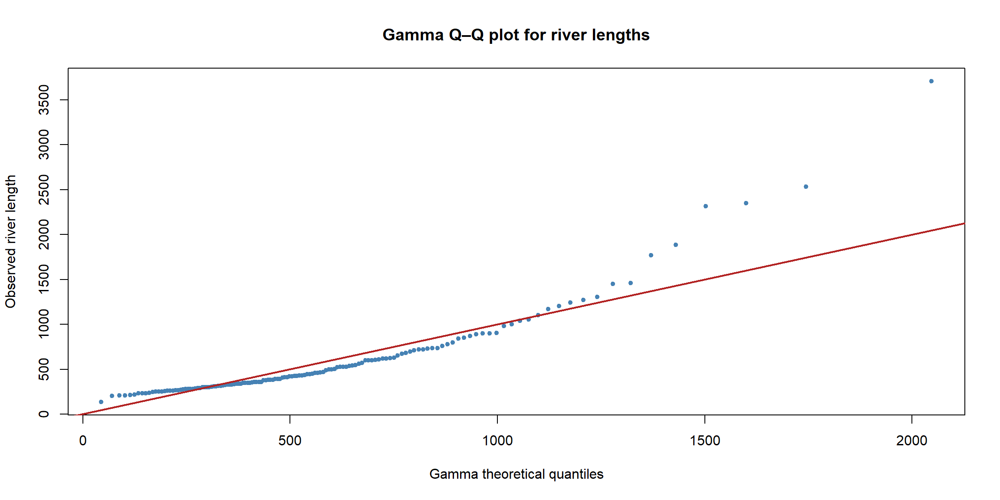
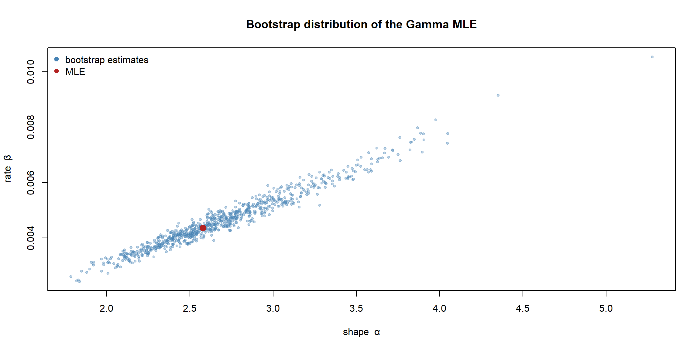

flowchart LR M["Pick a model<br/>f(x | θ)"] --> E["Estimate θ<br/>MoM & MLE"] E --> U["Quantify uncertainty<br/>Fisher info → SE → CI"] U --> T["Test a hypothesis<br/>Wald / score / LR"] T --> C["Check the fit<br/>plots & diagnostics"] C --> D["Conclusion"]
Worked Examples: The Whole Pipeline End to End
Every previous page introduced one link in a chain. This page joins them all up on real data. We will take two genuine datasets that ship with R and run the complete frequentist pipeline on each: choose a model, estimate its parameters two ways, quantify the uncertainty, test a hypothesis, and — crucially — check whether the model actually fits. No new theory; just the machinery from the rest of the section, applied honestly.
The two case studies are chosen to make a point. The first looks like a textbook success — until the diagnostics reveal it is not. The second is a two-parameter model where the algebra runs out and optim takes over. Together they show that fitting a model is easy; trusting it is the real work.
Case study 1 — Great discoveries per year (Poisson)
R’s built-in discoveries dataset records the number of “great” inventions and scientific discoveries in each year from 1860 to 1959. Counts of rare events in fixed intervals are the textbook setting for the Poisson distribution, \(f(y \mid \lambda) = e^{-\lambda}\lambda^{y}/y!\), with a single rate parameter \(\lambda\).
Code
```{r}
#| warning: false
#| message: false
y <- as.numeric(discoveries)
n <- length(y)
c(nYears = n, totalDiscoveries = sum(y),
mean = mean(y), variance = var(y))
``` nYears totalDiscoveries mean variance
100.000000 310.000000 3.100000 5.080808 Let us first just look at the data — always the first step.
Code
```{r}
#| fig-align: center
plot(1860:1959, y, type = "h", lwd = 2, col = "steelblue",
xlab = "Year", ylab = "Number of great discoveries",
main = "Great discoveries per year, 1860–1959")
points(1860:1959, y, pch = 19, col = "steelblue", cex = 0.6)
abline(h = mean(y), col = "firebrick", lwd = 2, lty = 2)
legend("topright", bty = "n", lwd = 2, lty = c(1, 2),
col = c("steelblue", "firebrick"),
legend = c("yearly count", expression(paste("mean ", bar(y)))))
```
Estimation: method of moments and maximum likelihood
The Poisson is the rare case where the two estimators from the intro page coincide exactly. The theoretical mean is \(\lambda\), so the method of moments sets \(\hat\lambda_{\text{MoM}} = \bar y\). And the log-likelihood \[ \ell(\lambda) = -n\lambda + \Big(\textstyle\sum_i y_i\Big)\log\lambda - \sum_i \log(y_i!) \] has score \(U(\lambda) = \sum_i y_i/\lambda - n\), which is zero at \(\hat\lambda_{\text{MLE}} = \bar y\) too. Both recipes land on the sample mean.
Code
```{r}
ll <- function(lambda) sum(dpois(y, lambda, log = TRUE))
lamMom <- mean(y) # method of moments
lamHat <- mean(y) # MLE (identical here)
# Fisher information I(λ) = n/λ ⇒ se = sqrt(λ̂ / n)
info <- n / lamHat
se <- 1 / sqrt(info)
c(lamMom = lamMom, lamMle = lamHat,
fisherInfo = info, stdError = se)
``` lamMom lamMle fisherInfo stdError
3.1000000 3.1000000 32.2580645 0.1760682 Uncertainty: two confidence intervals
We build both intervals from the asymptotics page — the symmetric Wald interval and the shape-respecting likelihood-ratio interval — and plot the log-likelihood with both overlaid.
Code
```{r}
# Wald interval
waldCI <- lamHat + c(-1, 1) * 1.96 * se
# Likelihood-ratio interval: invert 2[ℓ(λ̂) − ℓ(λ)] ≤ χ²₁,₀.₉₅
grid <- seq(lamHat - 4 * se, lamHat + 4 * se, length.out = 4000)
W <- 2 * (ll(lamHat) - sapply(grid, ll))
lrCI <- range(grid[W <= qchisq(0.95, df = 1)])
rbind(Wald = waldCI, LikelihoodRatio = lrCI)
``` [,1] [,2]
Wald 2.754906 3.445094
LikelihoodRatio 2.767676 3.457684Code
```{r}
#| fig-align: center
llVals <- sapply(grid, ll)
plot(grid, llVals, type = "l", lwd = 2, col = "steelblue",
xlab = expression(lambda), ylab = expression(ell(lambda)),
main = "Log-likelihood for the discovery rate, with 95% CIs")
cutoff <- ll(lamHat) - qchisq(0.95, 1) / 2
abline(h = cutoff, col = "grey50", lty = 3)
abline(v = lamHat, col = "black", lwd = 2)
abline(v = lrCI, col = "firebrick", lwd = 2, lty = 2)
abline(v = waldCI, col = "darkorange",lwd = 2, lty = 4)
legend("bottomright", bty = "n", lwd = 2, lty = c(1, 2, 4),
col = c("black", "firebrick", "darkorange"),
legend = c(expression(hat(lambda)), "Likelihood-ratio CI", "Wald CI"))
```
Because \(n = 100\) and the likelihood is nearly parabolic, the two intervals almost coincide — the regime where asymptotics are reliable.
A hypothesis test
Suppose a historian claims the long-run rate is exactly three discoveries per year. We test \(H_0: \lambda = 3\) against \(H_1: \lambda \neq 3\) using all three members of the trinity from the testing page.
Code
```{r}
lambda0 <- 3
# Wald: distance of the MLE from λ₀, scaled by info at the MLE
wWald <- info * (lamHat - lambda0)^2
# Score: steepness at λ₀, scaled by info at λ₀ (U(λ₀) = Σy/λ₀ − n, I(λ₀) = n/λ₀)
U0 <- sum(y) / lambda0 - n
wScore <- U0^2 / (n / lambda0)
# Likelihood-ratio: vertical drop from the peak to λ₀
wLR <- 2 * (ll(lamHat) - ll(lambda0))
round(rbind(
Wald = c(stat = wWald, p = 1 - pchisq(wWald, 1)),
Score = c(stat = wScore, p = 1 - pchisq(wScore, 1)),
LikelihoodRatio = c(stat = wLR, p = 1 - pchisq(wLR, 1))
), 4)
``` stat p
Wald 0.3226 0.5701
Score 0.3333 0.5637
LikelihoodRatio 0.3297 0.5658All three statistics are modest and the p-values comfortably exceed \(0.05\): the data is compatible with a rate of three per year. We do not reject \(H_0\) — though, per the testing page, that is “fail to reject,” not proof the rate is exactly three.
The crucial step: does the Poisson model even fit?
A Poisson distribution has a defining fingerprint: its mean equals its variance. We already saw the sample variance is noticeably larger than the sample mean — a warning sign called overdispersion. The clearest way to see the consequence is to overlay the fitted Poisson frequencies on the observed ones.
Code
```{r}
#| fig-align: center
kmax <- max(y)
observed <- as.numeric(table(factor(y, levels = 0:kmax)))
expected <- n * dpois(0:kmax, lamHat)
mat <- rbind(Observed = observed, `Fitted Poisson` = expected)
barplot(mat, beside = TRUE, names.arg = 0:kmax,
col = c("steelblue", "firebrick"),
xlab = "Discoveries in a year", ylab = "Number of years",
main = "Observed counts vs the fitted Poisson model")
legend("topright", bty = "n", fill = c("steelblue", "firebrick"),
legend = c("Observed", "Fitted Poisson"))
```
The model is too thin in the tails: it expects almost no years with 0 or with 6+ discoveries, yet both occur more often than predicted. This is exactly what overdispersion looks like. A quick dispersion check confirms it:
Code
```{r}
c(mean = mean(y), variance = var(y),
dispersionRatio = var(y) / mean(y)) # ≈ 1 for a true Poisson
``` mean variance dispersionRatio
3.100000 5.080808 1.638970
ImportantThe estimate was fine; the model was not
Every number we computed — the MLE, its standard error, the confidence intervals, the hypothesis test — was arithmetically correct. But they all assumed a Poisson, and the Poisson does not describe this data well. A richer model (e.g. the negative binomial, which allows the variance to exceed the mean) would be more honest. This is the central lesson of a worked example: estimation is mechanical, but it only means something once the model passes its diagnostics.
TipGoing further 🚀
Diagnosing overdispersion is only half the job — let’s fix it. The negative binomial adds a dispersion parameter so the variance can exceed the mean, and MASS::glm.nb fits it in one line. Comparing models by AIC (lower is better) makes the improvement concrete:
Code
```{r}
#| eval: false
library(MASS)
poisFit <- glm(y ~ 1, family = poisson) # the model we just fitted
nbFit <- glm.nb(y ~ 1) # negative binomial alternative
AIC(poisFit, nbFit) # lower AIC = better fit
```For fitting distributions (rather than regressions), fitdistrplus::fitdist(y, "nbinom") gives the fit, standard errors, and a panel of diagnostic plots via plot(fit) — a great one-stop package to explore.
A bootstrap sanity check
Finally, the simulation page told us we can always check an asymptotic standard error by resampling. The bootstrap distribution of \(\hat\lambda\) should be centred at the estimate with spread matching our formula se.
Code
```{r}
#| fig-align: center
set.seed(1)
B <- 5000
bootLambda <- replicate(B, mean(sample(y, n, replace = TRUE)))
hist(bootLambda, breaks = 40, col = "lightsteelblue", border = "white",
main = expression(paste("Bootstrap distribution of ", hat(lambda))),
xlab = expression(hat(lambda)))
abline(v = lamHat, col = "firebrick", lwd = 2)
abline(v = waldCI, col = "darkgreen", lwd = 2, lty = 2)
c(formulaSe = se, bootstrapSe = sd(bootLambda))
``` formulaSe bootstrapSe
0.1760682 0.2259631 
The two standard errors agree — the uncertainty calculation is trustworthy even though the model is imperfect. (Note the bootstrap resamples the real, overdispersed data, so it honestly reflects the true variability, slightly above the Poisson formula.)
Case study 2 — Lengths of major rivers (Gamma)
Our second dataset, rivers, gives the lengths (in miles) of 141 major rivers in North America. Lengths are positive and right-skewed, so a natural model is the two-parameter Gamma distribution with shape \(\alpha\) and rate \(\beta\) — exactly the intractable, multi-parameter case the simulation page tackled with optim.
Code
```{r}
#| fig-align: center
x <- rivers
n <- length(x)
hist(x, breaks = 20, col = "lightsteelblue", border = "white", freq = FALSE,
xlab = "River length (miles)", ylab = "Density",
main = "Lengths of 141 major North American rivers")
rug(x)
```
Fitting two parameters with optim
There is no closed form for the Gamma MLEs, so we minimise the negative log-likelihood numerically, seeding the search with method-of-moments starting values (the intro page’s promised use of MoM) and asking for the Hessian to get standard errors.
Code
```{r}
#| warning: false
#| message: false
nll <- function(par) {
shape <- par[1]; rate <- par[2]
if (shape <= 0 || rate <= 0) return(1e10)
-sum(dgamma(x, shape = shape, rate = rate, log = TRUE))
}
# Method-of-moments start: shape = mean²/var, rate = mean/var
m <- mean(x); v <- var(x)
start <- c(shape = m^2 / v, rate = m / v)
fit <- optim(start, nll, hessian = TRUE)
shapeHat <- fit$par[1]; rateHat <- fit$par[2]
V <- solve(fit$hessian) # variance–covariance = inverse observed information
se <- sqrt(diag(V))
ci <- cbind(estimate = fit$par,
lower = fit$par - 1.96 * se,
upper = fit$par + 1.96 * se)
round(ci, 4)
``` estimate lower upper
shape 2.5784 2.0904 3.0663
rate 0.0044 0.0035 0.0052Both parameters are estimated with their Wald intervals. The fitted shape is above 1, which matters: a Gamma with shape \(> 1\) has its density rising from zero, so the model expects very few extremely short rivers — sensible, since no major river has near-zero length.
How well does the fitted curve track the data?
Code
```{r}
#| fig-align: center
hist(x, breaks = 20, col = "lightsteelblue", border = "white", freq = FALSE,
xlab = "River length (miles)", ylab = "Density",
main = "River lengths with the fitted Gamma density")
xs <- seq(min(x), max(x), length.out = 400)
lines(xs, dgamma(xs, shape = shapeHat, rate = rateHat),
col = "firebrick", lwd = 3)
legend("topright", bty = "n", lwd = 3, col = "firebrick",
legend = "fitted Gamma")
```
Seeing the two-parameter likelihood
With two parameters the log-likelihood is a surface, not a curve. A contour plot shows the peak (the MLE) and how the parameters trade off — the elongated, tilted contours reveal that shape and rate are strongly correlated, the off-diagonal effect the likelihood page warned about.
Code
```{r}
#| fig-align: center
shapeSeq <- seq(shapeHat - 3.5 * se[1], shapeHat + 3.5 * se[1], length.out = 90)
rateSeq <- seq(rateHat - 3.5 * se[2], rateHat + 3.5 * se[2], length.out = 90)
surf <- outer(shapeSeq, rateSeq,
Vectorize(function(s, r) -nll(c(s, r))))
contour(shapeSeq, rateSeq, surf, nlevels = 25,
xlab = "shape α", ylab = "rate β",
main = "Log-likelihood surface for the Gamma fit")
points(shapeHat, rateHat, pch = 19, col = "firebrick", cex = 1.3)
text(shapeHat, rateHat, labels = " MLE", pos = 4, col = "firebrick")
```
We can also collapse the surface onto a single parameter via the profile likelihood: for each candidate shape, maximise over the rate. This is the honest one-dimensional picture of the evidence about the shape, and its \(\chi^2_1\) cut-off gives a confidence interval that respects the likelihood’s true form.
Code
```{r}
#| fig-align: center
shapeGrid <- seq(shapeHat - 3.5 * se[1], shapeHat + 3.5 * se[1], length.out = 150)
profile <- sapply(shapeGrid, function(s) {
o <- optimize(function(r) -sum(dgamma(x, shape = s, rate = r, log = TRUE)),
interval = c(1e-6, 10 * rateHat))
-o$objective
})
plot(shapeGrid, profile, type = "l", lwd = 2, col = "steelblue",
xlab = "shape α", ylab = "profile log-likelihood",
main = "Profile likelihood for the Gamma shape")
abline(h = max(profile) - qchisq(0.95, 1) / 2, col = "grey50", lty = 3)
abline(v = shapeHat, col = "firebrick", lwd = 2, lty = 2)
abline(v = 1, col = "darkgreen", lwd = 2, lty = 4)
legend("bottomright", bty = "n", lwd = 2, lty = c(2, 4, 3),
col = c("firebrick", "darkgreen", "grey50"),
legend = c(expression(hat(alpha)), "shape = 1 (Exponential)",
"95% LR cut-off"))
```
A nested hypothesis test: is the simpler Exponential enough?
The Exponential distribution is just a Gamma with shape fixed at 1. That makes “is the Exponential adequate?” a clean hypothesis test, \(H_0: \alpha = 1\), between two nested models — the ideal job for the likelihood-ratio test. We compare the full two-parameter Gamma fit against the one-parameter Exponential fit.
Code
```{r}
llGamma <- -fit$value # full model
rateExp <- 1 / mean(x) # Exponential MLE
llExp <- sum(dexp(x, rate = rateExp, log = TRUE)) # restricted model
LR <- 2 * (llGamma - llExp)
pValue <- 1 - pchisq(LR, df = 1) # 1 extra parameter
c(llExponential = llExp, llGamma = llGamma,
lrStatistic = LR, pValue = pValue)
```llExponential llGamma lrStatistic pValue
-1.040880e+03 -1.013112e+03 5.553662e+01 9.170442e-14 The likelihood-ratio statistic is large and the p-value tiny, so we reject the Exponential in favour of the Gamma: the extra shape parameter earns its place. This matches the profile plot above, where shape \(= 1\) falls well below the \(\chi^2_1\) cut-off line — the test and the picture tell the same story, just as the CI–test duality promises.
Diagnostics: a quantile–quantile plot
A density overlay is reassuring but coarse. The sharper check is a Q–Q plot: sort the data and plot it against the quantiles the fitted Gamma predicts. Points on the diagonal mean the model captures the whole distribution; systematic departure — especially in the tail — flags where it fails.
Code
```{r}
#| fig-align: center
theoretical <- qgamma(ppoints(n), shape = shapeHat, rate = rateHat)
empirical <- sort(x)
plot(theoretical, empirical, pch = 19, col = "steelblue", cex = 0.7,
xlab = "Gamma theoretical quantiles", ylab = "Observed river length",
main = "Gamma Q–Q plot for river lengths")
abline(0, 1, col = "firebrick", lwd = 2)
```
The bulk of the points hug the line, so the Gamma is a solid description of typical rivers — but the longest rivers tend to drift above the diagonal, meaning the real upper tail is a little heavier than the Gamma allows. A perfectly honest report would note that the model is good for the body of the distribution but slightly underestimates the chance of an exceptionally long river.
Bootstrapping the joint uncertainty
The Hessian-based standard errors are themselves asymptotic. Following the simulation page, we bootstrap the entire two-parameter fit — re-running optim on each resample — and scatter the resulting estimates. The cloud’s shape is the joint sampling distribution, and its tilt is the shape–rate correlation made visible.
Code
```{r}
#| warning: false
#| message: false
#| fig-align: center
set.seed(42)
B <- 800
boot <- matrix(NA, nrow = B, ncol = 2, dimnames = list(NULL, c("shape", "rate")))
for (b in 1:B) {
xb <- sample(x, n, replace = TRUE)
ob <- optim(fit$par, function(par) {
if (any(par <= 0)) return(1e10)
-sum(dgamma(xb, shape = par[1], rate = par[2], log = TRUE))
})
boot[b, ] <- ob$par
}
plot(boot[, "shape"], boot[, "rate"], pch = 19,
col = adjustcolor("steelblue", 0.35), cex = 0.6,
xlab = "shape α", ylab = "rate β",
main = "Bootstrap distribution of the Gamma MLE")
points(shapeHat, rateHat, pch = 19, col = "firebrick", cex = 1.4)
legend("topleft", bty = "n", pch = 19, col = c("steelblue", "firebrick"),
legend = c("bootstrap estimates", "MLE"))
# Bootstrap SEs next to the Hessian-based ones
rbind(hessianSe = se,
bootstrapSe = apply(boot, 2, sd))
``` shape rate
hessianSe 0.2489438 0.0004386156
bootstrapSe 0.4242876 0.0010045134
The bootstrap standard errors closely track the Hessian-based ones — the asymptotic two-parameter fit is trustworthy here — and the diagonal stripe in the scatter is the strong positive correlation between shape and rate that the contour plot first hinted at.
What every worked example has in common
Strip away the specifics and both case studies followed the identical pipeline, which is the whole of this section in one loop:
flowchart TD
A["Look at the data"] --> B["Choose a model f(x | θ)"]
B --> C["Estimate θ — MoM for a start, MLE for the answer"]
C --> D["Uncertainty — Fisher information → SE → confidence interval"]
D --> E["Test the question of interest — Wald / score / LR"]
E --> F["CHECK THE FIT — overlays, Q–Q plots, dispersion, bootstrap"]
F --> G{"Does it pass?"}
G -->|"Yes"| H["Report estimate, CI and test"]
G -->|"No"| B
| Step | Tool (and the page it came from) | Case 1 (Poisson) | Case 2 (Gamma) |
|---|---|---|---|
| Estimate | MoM & MLE (intro, likelihood) | \(\hat\lambda = \bar y\) | optim on the NLL |
| Standard error | Fisher information (likelihood) | \(\sqrt{\hat\lambda/n}\) | inverse Hessian |
| Confidence interval | Wald & LR (asymptotics) | both, nearly equal | Wald + profile |
| Hypothesis test | the trinity (testing) | \(H_0:\lambda=3\), not rejected | \(H_0:\alpha=1\), rejected |
| Model check | diagnostics & bootstrap (simulation) | overdispersion found | tail slightly heavy |
The estimates and intervals were the easy part — the same handful of formulas every time. The judgement lay in the last row: the Poisson’s machinery worked perfectly on a model that did not fit, while the Gamma survived its diagnostics with only a minor caveat. That is the real skill frequentist statistics teaches — not turning the crank, but knowing whether to trust what comes out.